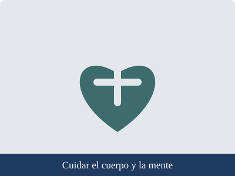

Autocuidado, prevención y derechos
Proyecto Interdisciplinario · Luis Navarro · 2.º Técnico · Unidad Educativa San Esteban
|
Inicio |
Autocuidado |
Prevención |
Derechos |
Fuentes confiables
Autocuidado

Qué es el autocuidado
El autocuidado es el conjunto de decisiones y hábitos con los que una persona protege su salud física,
su bienestar emocional y la calidad de sus relaciones. No consiste en pensar solo en uno mismo, sino en mantenerse
en buenas condiciones para estudiar, convivir con otros y cumplir las metas personales.
Ejemplo: la frase «debemos cuidarnos» resulta demasiado general. En la práctica significa dormir lo necesario,
alimentarse de forma variada, mantenerse activo, lavarse las manos, conversar con una persona de confianza cuando algo
preocupa y buscar ayuda a tiempo.
Cuidado del cuerpo
- Actividad física: la Organización Mundial de la Salud recomienda que las personas de 5 a 17 años realicen al menos 60 minutos diarios de actividad física de intensidad moderada a vigorosa.
- Alimentación: consumir frutas, verduras, cereales y proteínas, beber agua y reducir las bebidas azucaradas y los productos ultraprocesados.
- Descanso: en la adolescencia el organismo necesita dormir bien; conviene evitar el uso del celular a altas horas de la noche.
- Higiene y controles médicos: lavado de manos y dientes, aseo diario, vacunas al día y visitas periódicas al centro de salud.
Cuidado de las emociones
Según datos de la OMS, alrededor de uno de cada siete adolescentes de 10 a 19 años presenta algún problema de salud mental,
y muchos de estos casos no se detectan ni se tratan. Hablar de lo que sentimos es una forma de prevenir que el problema crezca.
- Conversar con la familia, un docente o el DECE (Departamento de Consejería Estudiantil) de la institución.
- Dedicar tiempo a actividades que generen bienestar: deporte, música, lectura o convivencia con amigos.
- Descansar de las pantallas y de las redes sociales.
- Pedir ayuda no es una debilidad. Si la tristeza o la angustia duran varios días, se debe acudir a un centro de salud. En una emergencia, llamar al ECU 911.
Cuidado de las relaciones
- Tratar a los demás con respeto, sin burlas ni discriminación.
- Aprender a decir «no» ante lo que incomoda o perjudica, y respetar cuando otra persona lo dice.
- Mantener vínculos con personas que brindan apoyo y buen trato.
Fuentes consultadas en esta página
Volver al inicio
Elaborado por Luis Navarro · 2.º Técnico · Unidad Educativa San Esteban